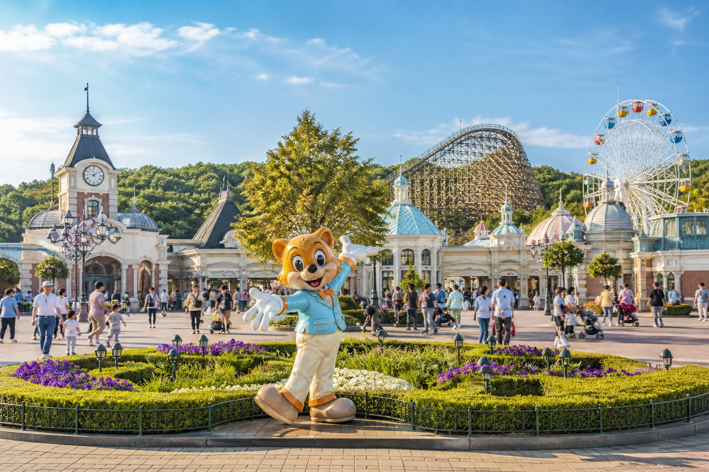

에버랜드
용인의 대형 테마파크. 가족·친구와 하루를 보내기 좋은 한국 대표 놀이동산입니다.
에버랜드는 경기도 용인에 있는 한국 대표 테마파크입니다. 롤러코스터·사파리·계절 축제까지 넓어서, 하루를 통째로 쓰기 좋은 ‘당일치기 목적 명소’입니다.
분당선 죽전·기흥 등에서 에버라인·셔틀·버스로 이동합니다. 개장 직후 인기 라이드를 먼저 타고, 더운 날·비 오는 날은 실내·그늘 동선을 짜 두면 덜 피곤합니다.
가격 분위기
온라인 사전 구매가 현장보다 유리한 날이 많습니다. 사파리·일부 체험은 별도일 수 있습니다.
이용 팁
편한 신발은 필수입니다. 성수기에는 이동·대기 시간이 길어지니, 지도 앱으로 최신 교통을 확인하세요.
에버랜드는 경기도 용인에 있는 한국 대표 테마파크입니다. 롤러코스터·사파리·계절 축제까지 넓어서, 하루를 통째로 쓰기 좋은 ‘당일치기 목적 명소’입니다.
분당선 죽전·기흥 등에서 에버라인·셔틀·버스로 이동합니다. 개장 직후 인기 라이드를 먼저 타고, 더운 날·비 오는 날은 실내·그늘 동선을 짜 두면 덜 피곤합니다.
가격 분위기 온라인 사전 구매가 현장보다 유리한 날이 많습니다. 사파리·일부 체험은 별도일 수 있습니다.
이용 팁 편한 신발은 필수입니다. 성수기에는 이동·대기 시간이 길어지니, 지도 앱으로 최신 교통을 확인하세요.